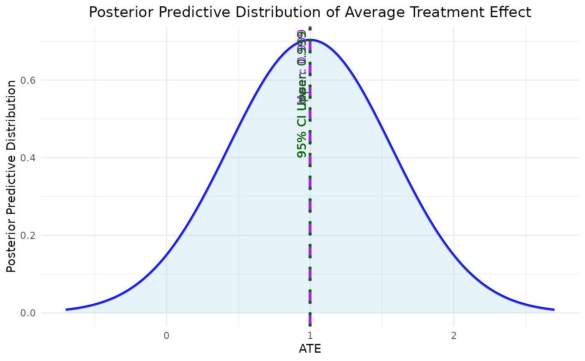

Plot Average Treatment Effect Density from Bootstrap Results
plot_ATE(
input,
ATE = "RD",
col_density = "blue",
fill_density = "lightblue",
main = "Posterior Predictive Distribution of Average Treatment Effect",
xlab = "ATE",
ylab = "Posterior Predictive Distribution",
xlim = NULL,
ylim = NULL,
...
)A model object, data frame or vector containing the bootstrap estimates of ATE.
define causal estimand of interest from RD, OR, RR.
Color for the density plot (default is "blue").
Fill color for the density plot (default is "lightblue").
Title of the plot (default is "Density of ATE Estimates").
X-axis label (default is "ATE").
Y-axis label (default is "Density").
Limits for the x-axis (default is NULL).
Limits for the y-axis (default is NULL).
Additional graphical parameters passed to the plot function.
testdata <- read.csv(system.file("extdata",
"continuous_outcome_data.csv",
package = "bayesmsm"))
model <- bayesmsm(ymodel = y ~ a_1+a_2,
nvisit = 2,
reference = c(rep(0,2)),
comparator = c(rep(1,2)),
family = "gaussian",
data = testdata,
wmean = rep(1, 1000),
nboot = 100,
optim_method = "BFGS",
parallel = TRUE,
ncore = 2)
plot_ATE(model)
